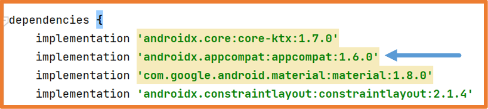
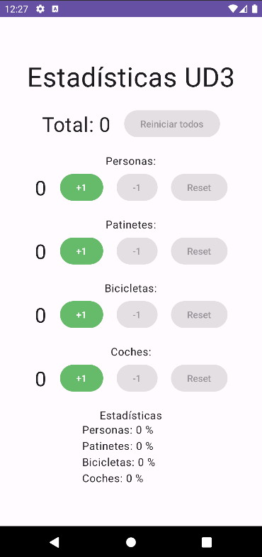

The user experience in mobile applications and desktop applications is very different.
In a mobile application, the user's interaction does not always start in the same place.
For example:
If the email application is opened, it is most common for the inbox or the last open window in the application to be displayed.
If you are browsing a web page and click the contact button to send an email,
it is likely that the email application will open directly to compose the email.
In desktop applications, the starting point of the application is the main method, which includes the code that runs when the application starts.
In mobile applications, this cannot be done the same way because an application can be started at different points within it, as seen in the previous point.
This is why the lifecycle of mobile applications is different from that of desktop applications.
Activities
The Activity class is a crucial component in an Android application.
In Android, each screen of the application is defined within an Activity.
An Activity is the entry point for user interaction with the application.
In Android, the code that starts an Activity corresponds to a method call, which relates to one of the specific stages of the Activity lifecycle.
As the user navigates, exits, and returns to the application, the different Activities in the application transition through various states in their lifecycle (lifecycle).
The Activity class provides a series of callback functions that notify the activity when its state changes:
onCreate()
onStart()
onResume()
onPause()
onStop()
onDestroy()
The system invokes each of these callbacks when an activity changes state in its lifecycle (lifecycle).
Using the lifecycle callbacks, you can define how the activity behaves when the user leaves and returns to it.
For example:
If you are creating a video streaming player, you can indicate that the video should pause and the network connection should close if the user switches to another application.
When the user returns to the activity, the connection can be re-established, and playback resumed.
Imperative vs Declarative Programming
The programming language Kotlin has features that bring it closer to declarative programming.
Example: Iterating through an array and transforming it into another one
Java: A for loop is used to traverse all elements,
specifying how each element is transformed, and finally storing it in the final array.
Kotlin: The map function is used,
which maps one list to another without specifying whether to create a new list, add elements, or define the order.
Native Applications in Android
Today, there are two options for developing native applications on Android:
Traditional with Views: imperative programming.
The graphical interface is defined in XML files, specifying the graphical elements (Views), and in the program's code, all actions are explicitly described.
The graphical elements (declarative UI) and their functionality (imperative programming) are defined directly in the program's code.
One of the main strengths of declarative user interfaces is that the interface elements are connected to the Activity state.
Thus, if an interface element changes, the state changes, and the interface is automatically redrawn to reflect the new state.
This process occurs automatically without requiring additional instructions from developers.
This system is highly optimized, and only the parts affected by the state change are redrawn.
Advantages of using declarative user interfaces:
Less code.
Simpler and easier-to-read code.
Avoids intermediary classes that can introduce errors.
Intuitive.
Automatically handles view changes linked to application state.
Very fast.
Preview capabilities for any component.
Highly powerful.
Frameworks such as React Native, Flutter, or
Swift UI use the declarative user interface paradigm.
This course will focus on Jetpack Compose as it represents the current market trend.
In native Android application development, it is possible to combine the traditional XML method with Jetpack Compose.
Jetpack Compose
Jetpack Compose is a toolkit for building and designing declarative user interfaces for Android.
It is 100% Kotlin-based.
It was introduced starting with the Artic Fox (2021) version of Android Studio.
Applications developed with Jetpack Compose can run on Android 5.0 (API 21) and above.
Jetpack Compose is only available for Android.
It is composed of:
Compiler: a Gradle plugin that generates the necessary code.
Runtime: an execution environment that creates and maintains the node tree to keep track of the elements in the interface.
UI Library: decides how the node tree is interpreted and rendered.
Both the compiler and the runtime are "fixed" and work generically.
The UI library is a component that can change,
and currently, the only stable version is Jetpack Compose, which is for Android.
Jetbrains is developing libraries for:
Compose for Desktop (Windows, Mac, and Linux)
Compose for Web (experimental)
Compose for iOS (alpha)
All these are grouped along with Jetpack Compose in the Compose Multiplatform
project, allowing developers to create applications with Compose and generate executables for Android, iOS, desktop, and web, similar to Flutter.
Android Development with Jetpack Compose
Using Jetpack Compose for Android application development involves
defining the graphical interface of the application declaratively.
To define the graphical interface, developers use Jetpack Compose components, which can either be system-provided or custom-defined by the programmer.
A Jetpack Compose component can contain another Jetpack Compose component.
This behavior is often used to create custom components that extend the functionality of existing ones.
If needed, imperative programming can also be used: variables, classes, control structures, functions, etc.
Creating a Project in Android
The best way to understand how Android Studio works is by creating a simple application that uses some of its components and functionalities.
This unit will consist of explaining concepts while creating an application.
Some concepts covered here will be explained in more detail in later units.
The application we will create will be a click counter like the one shown in the image.
Click Counter
Once Android Studio is open, there are several options to create a project:
If no project is open: Click on New Project.
New Project
If a project is already open, there are two options:
Close the project and then click on New Project.
Create a new project directly.
Create a project from a version control system (VCS): Enter the repository URL.
When creating the project, Android Studio displays a window with all the available templates.
You should choose Phone and Tablet and then Empty Activity (uses Jetpack Compose).
Templates with the word "Views" in their name use the traditional programming method with XML.
Next, fill in the project options:
Name: should be meaningful.
Package: must be unique. To ensure this, use the following structure:
com.XXYYZZ.projectname, where XX are the first two letters of your first name, YY the first two letters of your last name, and ZZ the first two letters of your second last name.
Save location: the directory where you want to save the project.
Minimum SDK: API 26 ("Oreo"; Android 8.0).
Choosing the minimum SDK is a crucial step when starting a project.
Lowest possible version -> supports the largest number of devices.
Highest possible version -> access to all features and functionalities.
In all course activities (whenever possible), we will select API 26 (95.4% reach).
While API 28 (89.6%) or API 28 (81.2%) could also be chosen without issue, as few devices today are below these versions.
At this point, Android Studio will begin creating the project.
During the project creation process, Android Studio will download all necessary components.
It is recommended do not to interact with the program until the project creation is fully complete.
You can check the download and project creation progress in the bottom right corner.
Structure of an Android Project
Once the project is created, you can view all its files. Depending on the selected view (Project, Android, etc.), the files may appear in different locations. Below, the most important ones will be explained.
This file describes the fundamental characteristics of the application and its components. It specifies the Activities (screens) included in the application and the permissions required by these Activities, such as camera, contacts, internet, etc.
Files: build.gradle
Android Studio uses Gradle to compile and build the application.
There is one build.gradle file for the entire project and another build.gradle file for each module in the project.
Generally, the build.gradle file for the app module is the most relevant.
This file contains the application's build dependencies and default configurations.
This file is where the behavior of this screen is programmed.
By default, it contains:
The definition of the main Activity and its onCreate method. Due to the lifecycle of Activities, the onCreate code will execute when the Activity reaches that state.
A Jetpack Compose component with text (Text).
A Jetpack Compose component with a preview (@Preview).
This directory contains files that configure the theme used by the application.
By default, Jetpack Compose uses a theme based on Material Design (Google's interface design guide).
These files in the ui.theme folder allow you to extend that theme.
Folder: res
Project View -> app/src/main/res
Android View -> res
This directory contains the application's resources.
Directories containing the application's icon for different screen pixel densities.
Android View -> res/mipmap
In Android view, the files are grouped by name. The RESOLUTION in which they are used is displayed alongside the name.
RESOLUTION nomenclature in Android:
xxxhdpi -> 640 dpi
xxhdpi -> 480 dpi
xhdpi -> 320 dpi
hdpi -> 240 dpi
mdpi -> 160 dpi
Measurement Units in Android
When developing Android applications, it is essential to understand the measurement units used.
Android supports the following measurement units:
dp -> density-independent pixels
sp -> scale-independent pixels
in -> inches
mm -> millimeters
pt -> points
px -> pixels
dp (density-independent pixels):
1dp equals one pixel on a 160dpi screen.
It is a flexible unit that adapts according to the screen's dpi:
dp = (width in pixels * 160) / screen density
It is the most efficient solution for displaying elements uniformly on screens with varying densities.
It is used for all sizes/measurements/distances except text.
sp (scale-independent pixels):
A unit similar to dp but scaled according to the font size.
It adjusts to the screen's density and the user's system preferences.
It is used for text.
in (inches):
Actual inches based on the physical size of the screen.
mm (millimeters)
Actual millimeters based on the physical size of the screen.
pt (points)
One point equals 1/72 of an inch based on the physical size of the screen.
px (pixels):
Corresponds to a real pixel on the screen.
Using px is discouraged as different devices have varying
pixel densities -> ppi (pixels per inch).
First Android Application: Click Counter
The initial content of a Jetpack Compose project is as follows:
Extends ComponentActivity, which is an Activity that supports Jetpack Compose components.
Contains the onCreate method, which runs when the application starts.
Within onCreate, the project theme is loaded, and within it, a Scaffold component is called, which in turn calls the Greeting function.
Greeting Function:
Accepts a String and a Modifier and generates a Text Jetpack Compose component.
This function is a Jetpack Compose component because it is annotated with @Composable.
GreetingPreview Function:
Loads the project theme and calls the Greeting function within it.
It is a Jetpack Compose component because it is annotated with @Composable.
Allows for previewing its content because it is also annotated with @Preview.
In the code, the following Jetpack Compose components can be seen:
Scaffold: A system component using Material Design that allows setting elevation, background, etc.
Text: A system component for displaying text.
ClickCounterTheme: A custom component created with the project that extends the default theme for Material Design. Defined in the ui.theme/Theme.kt file.
Greeting: A custom component extending the functionality of the Text component.
GreetingPreview: A custom component for previewing the Greeting component.
@Composable
All Jetpack Compose components, whether system-provided or custom, are functions that must be annotated with @Composable.
Android Studio allows real-time previews of defined components. To enable this, components must be annotated with @Preview, as seen with the GreetingPreview function.
Components receiving functions cannot be previewed directly. To resolve this, wrapper components are created around those components receiving functions.
To preview in Android Studio, select the Split option at the top-right.
For the first preview or after significant changes, click Build & Refresh...
Live Edit
To automatically update changes in the emulator, configure Android Studio's Live Edit option.
File -> Settings (CONTROL+ALT+S)
Application Content
The Click Counter application requires a text and a button. Modify the code to include these.
Start by removing the Greeting function and its calls.
Rename GreetingPreview to ContentPreview and create a Jetpack Compose component named Content.
This demonstrates good practices when programming with Kotlin and Jetpack Compose:
Named parameters are used in calls.
Parameters are written on separate lines if there are multiple.
Lambda functions as the last parameter are extracted outside the parentheses.
Application Functionality
With UI completed, the application's functionality needs to be implemented.
A variable is required to store the number of clicks. Implement this using a stateful variable to ensure the Activity's state updates correctly.
Finally, modify the variable to persist across Activity lifecycle events, such as orientation changes:
This practice is referred to as Hardcoded values. In general, this is not a good practice:
What happens if all buttons are required to have the same text size, and this size changes in the future?
What if the application needs to support multiple languages?
In Android Studio, values can be centralized (similar to creating variables) to use them throughout the project.
This makes changes easier to implement.
As a best practice, all text strings should be centralized at a minimum.
By default, Android Studio creates two files for these tasks:
colors.xml -> to centralize colors
strings.xml -> to centralize text strings
Color and String Value Files
Next, we will see how to use these files and how to create a similar file for dimensions and sizes.
Colors and strings can be added directly to their respective files by following the established pattern.
<color name="color_name">#COLOR_CODE</color>
Colors can be represented using two hexadecimal digits for each component:
In cases like the Click Counter app, text with variables can be centralized and accessed with parameters.
Parameterized String
From Kotlin, these parameters can be passed using stringResources:
Text(
text = stringResource(
id = R.string.counter_text,
times // Parameter variable
),
fontSize = 25.sp
)
Translating applications can be challenging because the same phrase has varying lengths in different languages.
A thorough analysis is essential to ensure consistent application behavior across all supported languages.
Multi-language Application
Creating multi-language applications with Android Studio is straightforward.
You simply need to create a strings.xml file for each supported language.
If there is only one strings.xml file, as is the case when a project is first created,
that file will be loaded regardless of the device's configured language.
If the device is set to a language, and there is no strings.xml file for that language, the default strings.xml
(created with the project) will be loaded.
If the device is set to one or more languages and strings.xml files exist for those languages,
the first language in the device's configuration list will be loaded.
If multiple strings.xml files exist and one of them is missing a translated string,
the default language string will be loaded.
Typically, the strings.xml file created with the project is for English.
To create a strings.xml file for another language, follow these steps:
Right-click on the values folder -> New -> Values Resource File
In the project inspector, you will see a second file for centralizing strings has been created:
Multiple Language Strings
The next step is to replicate the content of the original strings.xml file into the new file and translate the values of the strings:
Replicating Text
The string editor can also be used to add strings for different languages or even to create new strings.xml files:
String Editor
In the editor, there are as many columns as there are strings.xml files:
When multiple strings.xml files are available for different languages,
adding a string to one of the files will prompt Android Studio to remind you to translate it into the other languages.
Android Studio Translation Reminder
If a string is not translated into a specific language, Android Studio will display the string defined in the default strings.xml file.
The results can be previewed using @Preview:
Previews
You can also verify the results using the emulator:
Language Switching
Vertical and Horizontal Orientations
On fixed devices like televisions or in-car systems, changing the screen orientation does not make sense.
In fact, these devices typically lack an accelerometer to detect orientation changes.
Most Android mobile devices (smartphones and tablets) allow switching the screen orientation between vertical and horizontal.
Exceptions exist, such as smartwatches, which, despite being mobile devices, generally only support a single orientation.
When developing an application for mobile devices or tablets, it is important to consider the design for both orientations.
Thanks to Jetpack Compose, components are positioned to occupy the screen space based on how they are defined.
For this reason, most applications will display correctly regardless of screen size or orientation.
Later, we will explore how to display different components or style the same components differently based on screen size to enhance the user experience.
In some cases, you may want to design an application that does not allow orientation changes.
To achieve this, add the following property to the Activity in the AndroidManifest.xml file:
android:screenOrientation="ORIENTATION"
Android Manifest: Screen Orientation
This configuration must be applied to all Activities in the application where orientation should be locked.
Values Resource Files
Up until now, resource files with values such as strings.xml, colors.xml, and dimens.xml
have been used to centralize values.
These files can also be used to load specific values based on the device's configuration.
For instance, you can load a colors.xml file when the orientation is vertical (portrait) and another for horizontal (landscape),
similar to how strings.xml behaves for different languages.
With the traditional method of implementing user interfaces through XML files, this configuration made a lot more sense.
The following demonstrates how to create these files:
Right-click on the values folder and select Values Resource File.
Creating Resource Files
The behavior of these files is identical to strings.xml.
The file will be created in a folder that Android automatically loads based on the device's configuration.
Debug
Android Studio includes a debug mode that functions like most IDEs, allowing you to set breakpoints, run in debug mode, and step through code.
For simpler checks, you can use the Log class as shown below:
Log.i("TAG", "MESSAGE")
The message will appear in the Logcat section of Android Studio.
Logcat
Here is the complete example of the click counter on GitHub.
Android Studio Updates
The Android Studio software receives updates that can affect different components:
Android Studio itself.
Android SDK.
JDK.
Plugins.
Gradle.
Dependencies.
Occasionally, after updates, certain projects may stop working until they are properly configured.
The way errors are displayed depends on the type of update that caused them.
Error Display
Depending on the type of error, solutions will vary.
Java Version Error:
To resolve a Java version error, go to: File -> Settings (CTRL+ALT+S)
Select the correct JDK version.
Selecting Correct JDK
Appcompat Error:
In XML-designed applications, the appcompat library is used.
If you are developing an application that mixes XML and Jetpack Compose, such as during a migration from XML to Jetpack Compose, this library is also used.
Occasionally, after updates, you may need to update the dependency version. This can be configured in the build.gradle (Module: app) file:
 Gradle Dependencies
Exercises
Decimal-Binary-Hexadecimal Converter
Create an application where clicking a button generates a random integer. Once pressed, the button will turn into another button to clear everything and restart.
Once the integer is generated, two buttons will be enabled: one to convert the number to binary and another to convert it to hexadecimal. Use a different color for each button.
Example: Converter App
Here is a possible solution. Remember, this is just an aid; you should try to do it yourself.
Statistics
Create an application that tracks statistics on access to a street, counting people entering on foot, scooters, bicycles, and cars.
It should look similar to the example below.
Example: Statistics App
The application will have a counter for each of the mentioned vehicles, a button to increment the counter by 1,
a button to decrement it by 1, and a reset button for each counter.
There will also be a global counter that sums all individual counters and a general reset button for all counters.
At the bottom, a percentage tracking for each type of vehicle will be displayed.
The decrement and reset buttons will remain disabled as long as their corresponding counter is at 0. This can be done using the `enabled` property.
To align elements vertically, use the Column element; for horizontal alignment, use the Row element.
 Example: Statistics App
Here is a possible solution. Remember, this is just an aid; you should try to do it yourself.
Practice 4: Tennis Score Tracker
Create an Android Studio application to track the score of a tennis match consisting of 3 sets.
Each set is composed of games, and each game is composed of points.
Each point in a game increases the score. For example, if a team has 0 points and wins a point, it moves to 15; the next point moves to 30, then 40, and finally, another point wins the game, provided the opponent has 30 points or less. If both teams are tied at 40 points, it is a deuce.
If one team scores while tied, they gain an advantage.
If the same team scores again, they win the game. If the opponent scores, it reverts to deuce.
Once in deuce, a team must score two consecutive points to win the game.
Each set consists of games. A team wins the set by reaching 6 games with a 2-game lead. For instance, a team wins the set at 6-4 (or less).
A 7-5 score can also win the set. If both teams reach 6-6, a tie break is played.
The tie break scores 1 point at a time, with the winner being the first to reach 7 points with a 2-point lead.
Thus, the application will have a button for each team to increment their points within the current game. If the point wins the set, the set counter will increment.
If the set wins the match, it will indicate the match is over.
There will be a reset button for the entire match.
Considerations:
The application should support English and Spanish.
The app should only work in portrait mode.
Centralized color management: one color per team, one for sets, one for games, and one for points.
If a tie-break occurs, it should be visually noticeable.
The code should be commented and properly formatted.